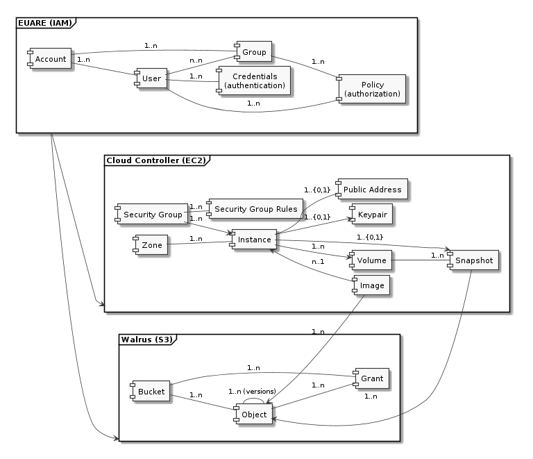
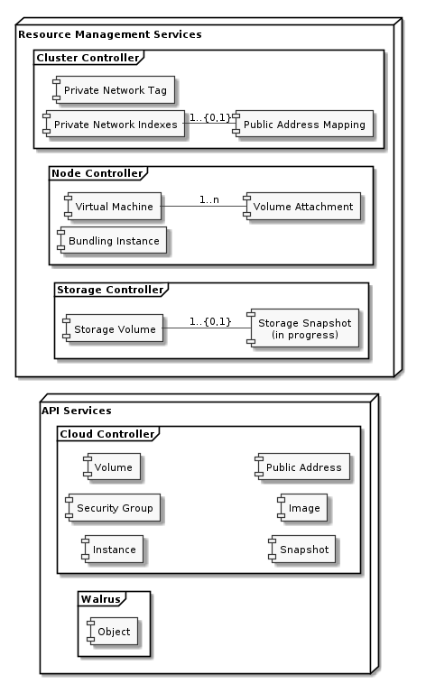
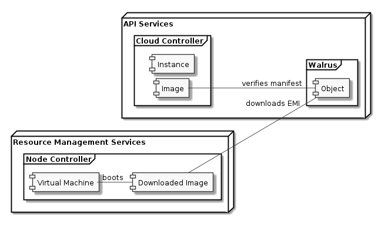
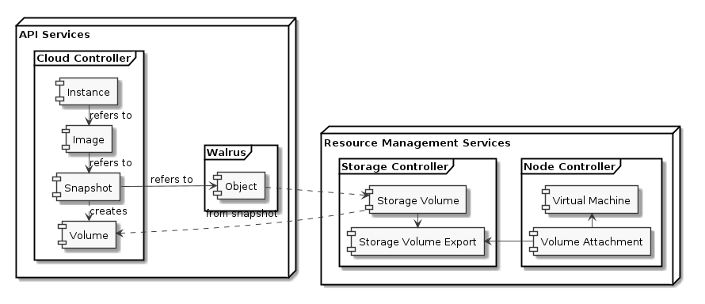

Architectural Foundations
At its core, Eucalyptus is a distributed system of web-services for
provisioning collections of related virtual resources using actual physical
resources. This function has a formative influence on the architecture of
the system. The Eucalyptus web-services coordinate to realize a logical
model that users specify through API operations by manipulating a variety of
distributed physical resources (compute hosts, networks, storage devices,
etc.).
The characteristics of this role, the involved resources and their
interactions are major influences on the system's' architecture. These can
be classified:
- The Logical Model: Virtual Resources the
collection of related logical entities which the user of the system uses
to express the desired outcome.
- The Information Model: Ground Truth & Physical
Resources the authoritative source of state information about some
resource or relationship. Implementation and operational realities have
lead us to co-locate ground truth with the physical resource. This feeds
back into the logical model used internally but is not otherwise visible
to users of the system.
- The State Model: Resource Lifecycle & Interactions
Each resource has a set of logical states and transitions which a resource
goes through as the system works to actuate changes to physical resources.
Similarly, logical resources also have long-lasting (and possibly
stateful) interactions that can manifest as physical changes in the
system.
- The Control/Concurrency Model: Service
Architecture Eucalyptus is organized as a tiered ensemble of web
services. Service components "plug into" a universal naming and messaging
substrate software that separates (abstracts away) communication and
location functions throughout the ensemble. All Eucalyptus software
components, fundamentally, use this bus-style architecture to communicate.
Taken together, these determine abstract model of the system, its interfaces,
interactions, and behaviours. Moreover, there are
implications on the physical/deployment model of the system's services which
follow from ground-truth living at the physical resource. The remaining
sections elaborate on these influences and their consequences.
Logical Resource Model

The logical resource model determines the vocabulary that is used to do work
using Eucalyptus. This vocabulary has nouns (virtual machine instance,
volume, bucket, etc.) and verbs (create, add, terminate, etc.) which are
expressed in (and intertwined with) the definition of the API operations of
the user-facing web-services.
In Eucalyptus, we have 3 user-facing
services which expose operations for controlling logical resources. These
services and their related resources are depicted in the diagram to the
right.
The following things are important to understand when looking at the
diagram:
- The diagram depicts only top-level resource types -- it elides
dependent attributes, i.e., anything which has a one-to-one relationship
with a resource in terms of data and lifecycle.
- The diagram depicts only resource types that are part of the
logical model -- it elides important relatinships that result from the
physical realization of the logical resource. For example, a volume
- The cardinality relationships are varied (optional/required;
many-to-many/one-to-one) and can have a direction (e.g., an image can be
used by many instances, but an instance only uses one image).
- Relationships span across the user-facing services -- e.g., image
registrations (in the Cloud Controller) refer to objects (in Walrus).
CLC
- Instance
- Security Group
- Security Group Rules
- Volume
- Snapshot
- Image
- Keypair
- Public Address
- Zone
Walrus
EUARE
- User
- Group
- Account
- Policy
- Credentials
The Information Model: Ground Truth & Physical
Resources

A fundamental architectural principle in Eucalyptus is that ground
truth lives at the physical resource. What this means for the system is
that services which manage a resource are run at (or as close as possible
to) the resource. This has the benefit of focusing the service's purpose and
interfaces, defining when the service is authoritative about system state,
defining a narrow fault region, and dictates placement of the service in a
system deployment.
Looking to the logical model, it is clear that realizing such a model
requires the interaction of physically distributed components to control
things such as numerous compute hosts, network addressing, access, and
border services, storage devices, etc. As an example, the logical
instance
resource defines a coordinated collection of boot resources, compute,
networking, and storage -- it is not a virtual machine. The
consequence in Eucalyptus is that services are co-located with and
responsible for ground truth for resources and arbitrate
interactions between such resources.
We distinguish two roles of services in Eucalyptus:
- API services act as ground-truth for the
logical model and are responsible for defining the logical resource,
coordinating creation and changes to the physical instantiation along with
the subsequent monitoring of its status.
- Resource Management services are the stewards of ground-truth
for physical resources and are responsible for brokering access to use the
resource and acting as the authority on the resource's state.
Given that the physical world cannot be perfectly controlled, a
consequence of this is that API services must interrogate Resource
Management services and reconcile reality with the expectations of the
current logical resource state. For example, an instance which had been
previously run (and so was logically defined and then realized on a physical
resource) may have failed for reasons which are outside the control paths of
the system. Then, the reality is that the instance has failed and the
Resource Management service is responsible for detecting that failure and
exposing that information. Subsequently, the API services must be able to
discover and correspondingly report the change in the logical view of the
instance.
As a result, Eucalyptus has a number of internal services for this
purpose. Here is how they relate to the previously mentioned services:
- Cloud Controller: EC2 API service and operations
needed to support instance deployments.
- Walrus: S3 API service and operations neeeded to
support object storage.
- Cluster Controller: Backend service for private
networking, dynamic address assignment, and arbitrator of compute resource
allocation.
- Storage Controller: Backend service for volume
operation and interactions like snapshot creation.
- Node Controller: Backend services need to support
virtual machine operation and interactions like volume attachment, and
private network access.
-
Instance
The information related to the logical instance resource spans all components
within the system. Fundamentally it can be broken down into those related to:
bootstrapping the virtual machine, setting up networking (private and public),
handling volume attachments, and bundling an instance.
Instance Store

- Instance
- Image
- Object
- Virtual Machine
Best Friend EBS

- Instance
- Image
- Snapshot
- Object
- Volume
- Storage Volume
- Storage Volume Export
- Volume Attachment
- Virtual Machine
Private Networking
- Instance
- Security Group
- Private Network Tag
- Private Network Indexes
Public Addressing
- Instance
- Public Address
- Public Address Mapping
Volume Attachments
- Instance
- Volume
- Virtual Machine
- Volume Attachment
- Storage Volume
- Storage Volume Export
Instance Bundling
- Image
- Object
- Virtual Machine
- Bundling Instance
Other Resource Operations
Volume Snapshots
- Volume
- Snapshot
- Object
- Storage Volume
- Storage Snapshot Progress
Image Registration
- Image
- Bucket
- Object
- Manifest
- Image Parts
The State Model: Resource Lifecycle and
Interactions
Resource Lifecycle
TODO: per-resource lifecycles (instance, group, )
Resource Interactions
TODO: per-resource interactions